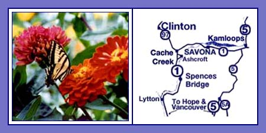

Location

This Kamloops Lake Accommodation is Conveniently Located on the Scenic Route Between Whistler and Vancouver, British Columbia and the Rockies
For Reservations or Information E-mail us at info@kamloops-accommodations.com
Or Call us Toll Free at 1-800-909-7434 or 250-373-2528
Lakeside Country Inn is located on beautiful Kamloops Lake in a small town, Savona, 25 minutes west of the City of Kamloops. Lakeside Country Inn is easy to find, just off the #1 Trans Canada Highway.
The mild, dry four-season climate in the Kamloops area is truly wonderful. Visitors enjoy our hot, sunny summers. Kamloops experiences over 2,000 hours of sunshine a year! The average daily temperature in June is 25 degrees C, July is 29 degrees C, August is 28 degrees C and in September, it is 22 degrees C. If it is raining here, it is probably raining throughout the province as we receive an average of only 25 cm of precipitation annually. Kamloops Lake has a moderating effect on the weather.
Driving Directions
To calculate approximate distances and driving times click here. If you need more information, don't hesitate to contact us.
If you are Traveling from Whistler: If you are traveling from Whistler, you will visit Pemberton, Mount Currie and Lilloett and then Cache Creek. Lakeside Country Inn is located half an hour east of the town of Cache Creek in Savona. Follow signage from Kamloops as you go through Cache Creek. You will see the Lakeside Country Inn billboard as you approach Savona and just before you glimpse Kamloops Lake. The Savona Access Road loops back to the #1 Trans Canada at either end of Savona. You can turn immediately after you cross on the bridge over the Thompson River, or continue another four kilometers on the highway and turn left at the Super Save Gas Station. We suggest you take the second left at the gas station. Follow the Savona Access Road for one kilometer as it curves left along the lake
If you are Traveling from Vancouver: You can take the #5 Coquihalla Highway or the #1 Trans Canada to Lakeside Country Inn from Vancouver. The driving time for either route is about four and a half hours. You will make this decision when you reach Hope.
If you would like to take the scenic #1Trans Canada: The trip from Vancouver through the Fraser Canyon on the #1 is spectacular. You want to make sure that you stay on the Trans Canada at Hope by taking exit #170, signed for Hope and Cache Creek. You may wish to stop at Hell's Gate in the dramatic Fraser Canyon. You then travel through the towns of Lytton, Spences Bridge and finally Cache Creek. At Cache Creek, follow signage for Kamloops. You will see the Lakeside Country Inn billboard as you approach Savona and just before you glimpse Kamloops Lake. The Savona Access Road rejoins the #1 Trans Canada at either end of Savona. You can turn immediately after you cross the bridge over the Thompson River, or continue another four kilometers on the highway and turn left at the Super Save Gas Station. We suggest you take the second left at the gas station. Follow the Savona Access Road for one kilometer as it curves left along the lake.
If you would like to take the #5 Coquihalla: Should you decide to take the #5 Coquihalla, do not exit the highway at Hope and instead follow signage for Merritt. At Merritt, follow signage for Kamloops. Just before you reach the city of Kamloops, take exit #362 west (signed for Vancouver, Cache Creek and Prince George) to the #1 Trans Canada West. Savona is 31 kilometers (about 20 minutes) west. You will see Lakeside Country Inn's billboard on our antique 1950 Chevrolet truck, parked just outside of Savona. Turn right onto the Savona Access Road at the Savona Super Save Gas Station and follow the road along the lake for one kilometer.
If you are Traveling from the East Through the City of Kamloops: As you approach the city of Kamloops, follow signage for Vancouver. When you reach the western outskirts of the city, take exit #362 signed for Cache Creek (and if you look closely, Vancouver). While the exit is not signed for Savona, you will see signage for Savona as soon as you exit indicating that the distance to Savona is 31 kilometers. Just outside of Savona, you will see our billboard on our antique1950 Chevrolet truck. Turn right onto the Savona Access Road at the Savona Super Save Gas Station and follow the road along the lake for one kilometer.
If you keep in mind that the inn is located on the shore of Kamloops Lake, in a residential area, you should have no problems with our directions. But you are always welcome to call us if you need additional information.